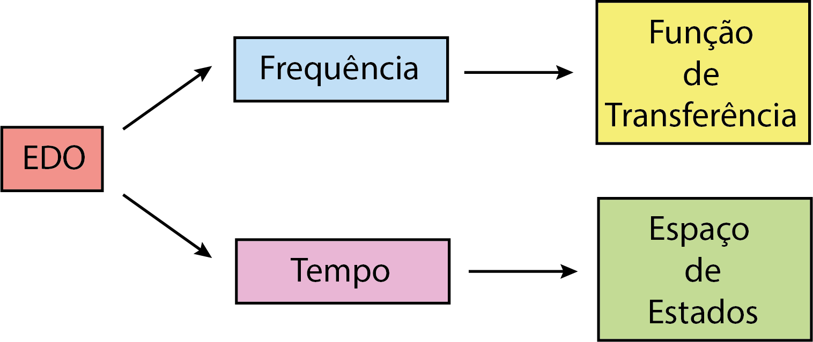
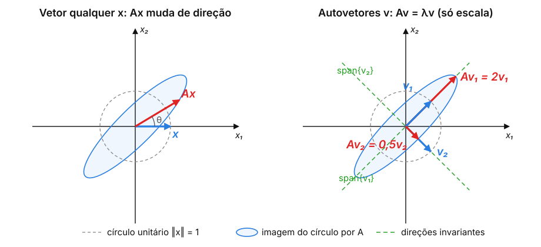
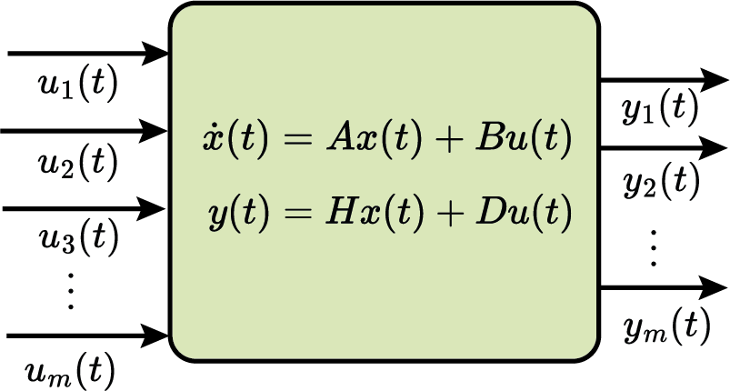
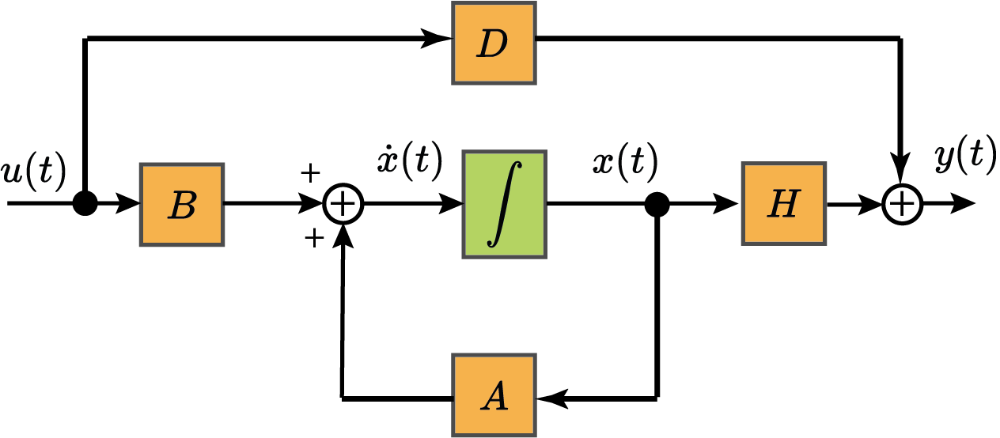
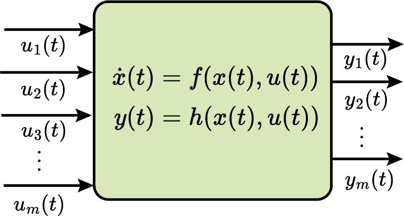
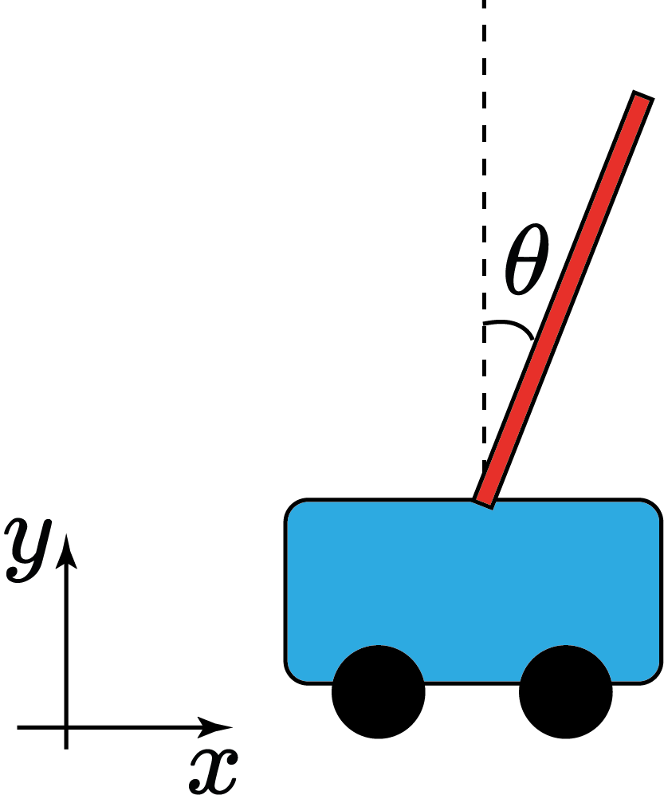
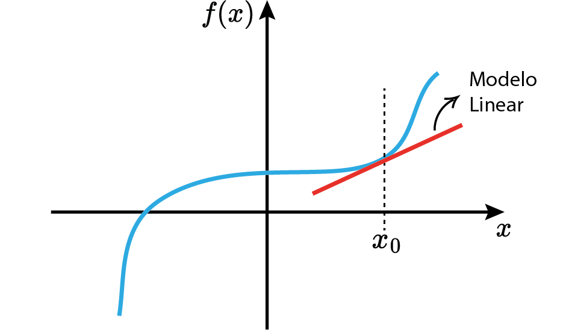
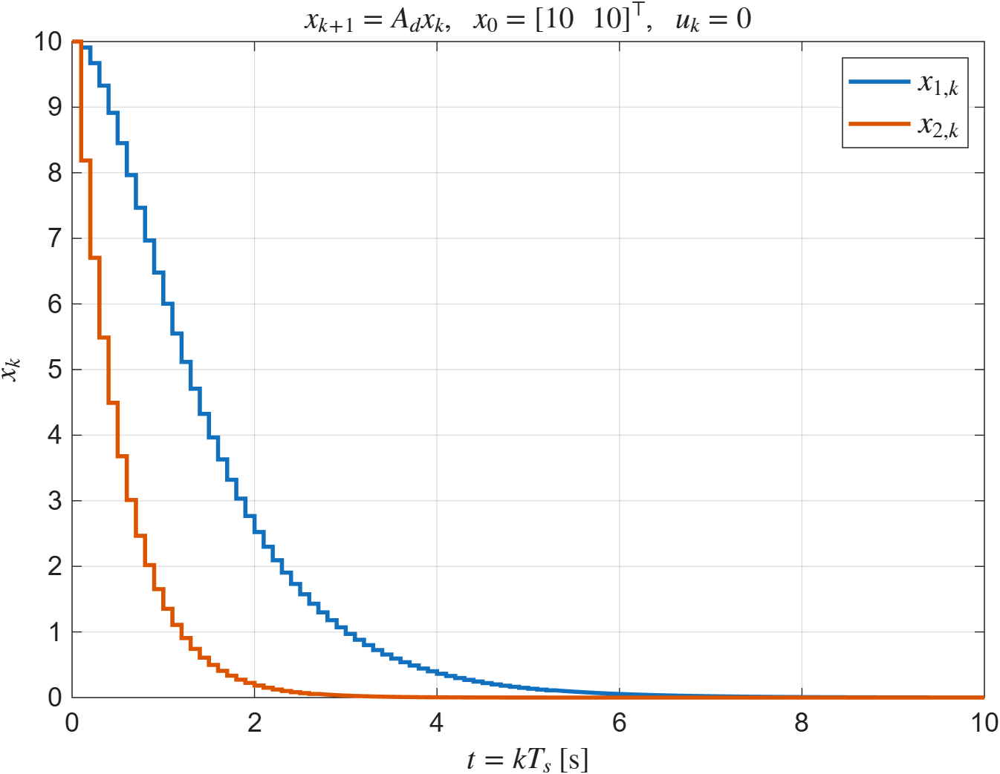
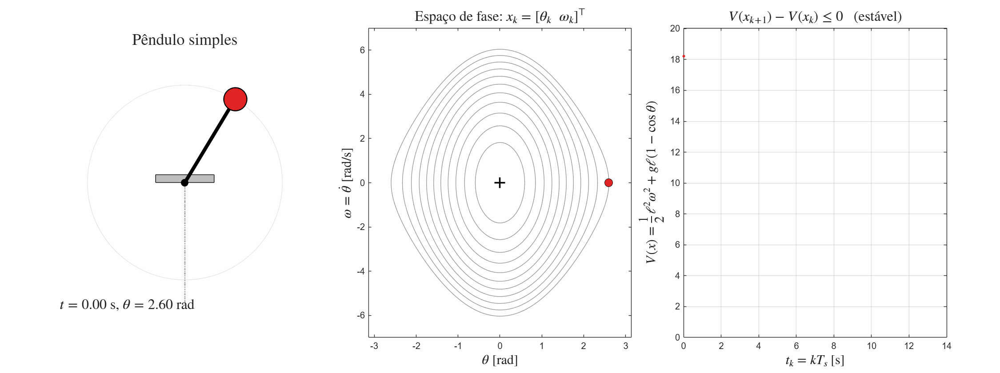
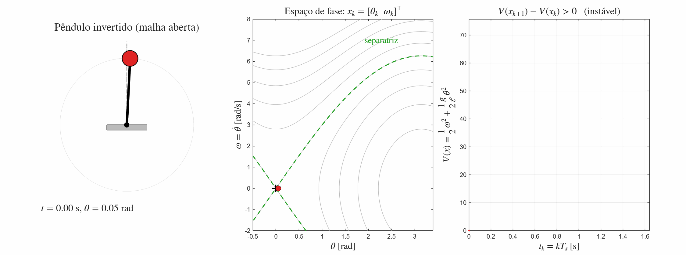

Aula 7:
Introdução ao Controle Digital em Espaço de Estados
Prof. Marcos Rogério Fernandes
24 de setembro de 2026
Ciclo do Projeto de Controle

Objetivos
Os objetivos dessa aula são entender:
- Revisão de Álgebra Linear;
- Modelos em espaço de estados;
- Discretização em espaço de estados;
- Análise de estabilidade em espaço de estados;
Sistema Dinâmico em tempo contínuo
EDO $$ \sum_{i=0}^n\alpha_i\frac{d^i y}{dt^i}=\sum_{i=0}^m\beta_i\frac{d^i u}{dt^i} $$

Abordagens

Revisão de Álgebra Linear
Matriz: $$ A_{n\times m}=\begin{bmatrix} a_{11} & a_{12} & \cdots & a_{1m}\\ a_{21} & a_{22} & \cdots & a_{2m}\\ \vdots & \vdots & \ddots & \vdots\\ a_{n1} & a_{n2} & \cdots & a_{nm}\\ \end{bmatrix} $$
De forma compacta$$ A_{n\times m}=[a_{ij}] $$
$i\to$ linhas e $j\to$ colunasRevisão de Álgebra Linear
Vetores Colunas: $$ A_{n\times m}=\begin{bmatrix} | & | & \cdots & |\\ c_{1} & c_{2} & \cdots & c_{m}\\ | & | & \cdots & |\\ \end{bmatrix} $$
Vetores Linhas: $$ A_{n\times m}=\begin{bmatrix} - & l_1^\trp & -\\ - & l_2^\trp & -\\ & \vdots \\ - & l_n^\trp & -\\ \end{bmatrix} $$
Revisão de Álgebra Linear
i-ésima linha produto escalar com a j-ésima coluna $$ [A_{n\times m}B_{m\times p}]_{ij}=\langle l_i^A, c_j^B\rangle $$
Revisão de Álgebra Linear
$$ (AB)_{n\times p}=\begin{bmatrix} \langle l_1^A, c_1^B\rangle & \langle l_1^A, c_2^B\rangle & \cdots & \langle l_1^A, c_p^B\rangle\\ \langle l_2^A, c_1^B\rangle & \langle l_2^A, c_2^B\rangle & \cdots & \langle l_2^A, c_p^B\rangle\\ \vdots & \vdots & \ddots & \vdots \\ \langle l_n^A, c_1^B\rangle & \langle l_n^A c_2^B\rangle & \cdots & \langle l_n^A, c_p^B\rangle\\ \end{bmatrix} $$
Revisão de Álgebra Linear
$$ (AB)_{n\times p}=c_1^A(l_1^B)^\trp +c_2^A(l_2^B)^\trp+\cdots+c_m^A(l_m^B)^\trp $$
Revisão de Álgebra Linear
$$ Ax =\begin{bmatrix} - & (l_1^A)^\trp & - \\ - & (l_2^A)^\trp & - \\ &\vdots \\ - & (l_n^A)^\trp & - \\ \end{bmatrix}\begin{bmatrix} x_1\\ x_2\\ \vdots \\ x_n \end{bmatrix}=\begin{bmatrix} \langle l_1^A, x\rangle\\ \langle l_2^A, x\rangle\\ \vdots \\ \langle l_n^A, x\rangle\\ \end{bmatrix} $$
Revisão de Álgebra Linear
$$ AB \neq BA $$
Transposto:$$ (AB)^\trp = B^\trp A^\trp $$
Inversa:$$ (AB)^{-1}=B^{-1}A^{-1} $$
Revisão de Álgebra Linear
$$ Av=\lambda v $$
Operador Autovalores: $$ \lambda\{A\}=\{\lambda_1,\lambda_2,\ldots,\lambda_n\} $$
Matriz (semi)-definida positiva: $$ A\succeq 0 \Rightarrow \lambda \{A\} \ge 0 $$
Revisão de Álgebra Linear
$$ (\lambda I-A)v=0 $$
Operador Autovalores: $$ \lambda\{A\}=\{\lambda_1,\lambda_2,\ldots,\lambda_n\} $$
Matriz (semi)-definida positiva: $$ A\succeq 0 \Rightarrow \lambda \{A\} \ge 0 $$
Revisão de Álgebra Linear
$$ det(\lambda I-A)=0 $$
Operador Autovalores: $$ \lambda\{A\}=\{\lambda_1,\lambda_2,\ldots,\lambda_n\} $$
Matriz (semi)-definida positiva: $$ A\succeq 0 \Rightarrow \lambda \{A\} \ge 0 $$
Revisão de Álgebra Linear

Revisão de Álgebra Linear
$$ A=V\Lambda V^{-1} $$
em que $$ \begin{aligned} V=\begin{bmatrix} | & | & \cdots & |\\ v_1 & v_2 & \cdots & v_n\\ | & | & \cdots & | \end{bmatrix},\quad \Lambda = \begin{bmatrix} \lambda_1 \\ & \lambda_2 \\ & & \ddots \\ & & & \lambda_n \end{bmatrix} \end{aligned} $$Revisão de Álgebra Linear
$$ \begin{aligned} A^{-1} = V\begin{bmatrix} \frac{1}{\lambda_1} \\ & \frac{1}{\lambda_2} \\ & & \ddots \\ & & & \frac{1}{\lambda_n} \end{bmatrix}V^{-1} \end{aligned} $$
Revisão de Álgebra Linear
$$ \begin{aligned} A^n = V\begin{bmatrix} \lambda_1^n \\ & \lambda_2^n \\ & & \ddots \\ & & & \lambda_n^n \end{bmatrix}V^{-1} \end{aligned} $$
Revisão de Álgebra Linear
$$ \begin{aligned} e^A = V\begin{bmatrix} e^{\lambda_1} \\ & e^{\lambda_2} \\ & & \ddots \\ & & & e^{\lambda_n} \end{bmatrix}V^{-1} \end{aligned} $$
Revisão de Álgebra Linear
Exponencial Matricial: $$ e^A=I+A+\frac{1}{2!}A^2+\frac{1}{3!}A^3+\cdots $$
Similar ao caso escalar: $$ e^a=1+a+\frac{1}{2!}a^2+\frac{1}{3!}a^3+\cdots $$
Modelo em Espaço de Estados
EDO $$ \boxed{\alpha_n\frac{d^n y}{dt^n}+\alpha_{n-1}\frac{d^{n-1}y}{dt^{n-1}}+\cdots+\alpha_0y=u} $$
Introduz-se variáveis de estado:
$$ x_1=y,\quad x_2=\frac{dy}{dt},\quad \cdots,\quad x_n=\frac{d^{n-1}y}{dt^{n-1}} $$
Modelo em Espaço de Estados
Espaço de Estados $$ \dot{x}(t)=Ax(t)+Bu(t) $$
Modelo em Espaço de Estados
Espaço de Estados $$ \dot{x}(t)=Ax(t)+Bu(t) $$
$$ x\in\mathbb{R}^n \to \text{vetor de estados}\\ u\in\mathbb{R}^m \to \text{vetor de entrada}\\ A\in\mathbb{R}^{n\times n}\to \text{matriz de dinâmica}\\ B\in\mathbb{R}^{n\times m}\to \text{matriz de entrada}\\ $$
Modelo em Espaço de Estados
Equação de Saída: $$ y(t)=Hx(t)+Du(t) $$
$$ y\in\mathbb{R}^p \to \text{vetor de saída}\\ H\in\mathbb{R}^{p\times n}\to \text{matriz de saída}\\ D\in\mathbb{R}^{p\times m}\to \text{matriz de transmissão direta}\\ $$
Modelo em Espaço de Estados (Linear)
$$ \dot{x}(t)=Ax(t)+Bu(t)\\ y(t)=Hx(t)+Du(t) $$

Multiple Inputs Multiple Outpus (MIMO)
Modelo em Espaço de Estados (Linear)

Exemplo
$$ \ddot{y}+2\xi\omega_n\dot{y}+\omega_n^2 y = \omega_n^2 u $$
$$ x_1=y;\quad x_2=\dot{y}=\dot{x}_1; \quad\dot{x}_2=\ddot{y}. $$Exemplo
$$ \ddot{y}+2\xi\omega_n\dot{y}+\omega_n^2 y = \omega_n^2 u $$
$$ x_1=y;\quad x_2=\dot{y}=\dot{x}_1; \quad\dot{x}_2=\ddot{y}. $$ Logo,Modelo em espaço de estados: $$ \begin{aligned} \begin{bmatrix} \dot{x}_1\\ \dot{x}_2 \end{bmatrix}&=\begin{bmatrix} 0 & 1\\ -\omega_n^2 & -2\xi\omega_n \end{bmatrix}\begin{bmatrix} x_1\\ x_2 \end{bmatrix}+\begin{bmatrix} 0\\ \omega_n^2 \end{bmatrix}u\\ y&=\begin{bmatrix}1 & 0 \end{bmatrix}x \end{aligned} $$
Modelo em Espaço de Estados (Não-Linear)
$$ \dot{x}(t)=f(x(t),u(t))\\ y(t)=h(x(t),u(t)) $$

Pêndulo Invertido móvel

$$ \begin{aligned} (M+m)\ddot{x}-ml\ddot{\theta}\cos(\theta)+ml\dot{\theta}^2\sin(\theta)&=F\\ l\ddot{\theta}+b\dot{\theta}-\ddot{x}\cos(\theta)-g\sin(\theta)&=0 \end{aligned} $$
Modelo em Espaço de Estados (Linearizado)

Modelo em Espaço de Estados (Linearizado)
$$ \delta \dot{x}(t)=A\delta x(t)+B\delta u(t)\\ \delta y(t)=H\delta x(t)+D\delta u(t) $$
em que $$ \begin{aligned} &\boxed{\delta x(t)=x(t)-x_e},\quad \boxed{\delta u(t)=u(t)-u_e}\\ A&=\frac{\partial f}{\partial x}\Bigr|_{x=x_e,u=u_e},\quad B=\frac{\partial f}{\partial u}\Bigr|_{x=x_e,u=u_e}\\ H&=\frac{\partial h}{\partial x}\Bigr|_{x=x_e,u=u_e},\quad D=\frac{\partial h}{\partial u}\Bigr|_{x=x_e,u=u_e} \end{aligned} $$ obs: $(x_e,u_e)\rightarrow \text{ponto de equilíbrio do sistema}$Pêndulo Invertido móvel (linearizado)
$$ \theta\approx 0 $$
Então, $\sin(\theta)\approx 0$, e $\cos(\theta)\approx 1$, logo
$$ \begin{aligned} (M+m)\ddot{x}-ml\ddot{\theta}&=F\\ l\ddot{\theta}+b\dot{\theta}-\ddot{x}&=0 \end{aligned} $$
Discretização do Modelo em Espaço de Estados
Dado um modelo em tempo contínuo:
$$ \dot{x}(t)=Ax(t)+Bu(t)\\ $$
Como obter equivalente em tempo discreto?
$$ x_{k+1}=A_dx_k+B_du_k\\ $$
Discretização via Integração
$$ \dot{x}=ax,\quad x\in\mathbb{R} $$
Solução:$$ x(t)=e^{a(t-t_0)}x(t_0),\quad t\in[t_0,T] $$
em que $e^x=1+x+\frac{1}{2}x^2+\cdots$Discretização via Integração
$$ \dot{x}=ax+bu,\quad x,u\in\mathbb{R} $$
Solução:$$ x(t)=e^{a(t-t_0)}x(t_0)+\int_0^t e^{a(t-\tau)}b u(\tau)d\tau,\quad t\in[t_0,T] $$
em que $e^x=1+x+\frac{1}{2}x^2+\cdots$Discretização via Integração
$$ \dot{x}=Ax+Bu,\quad x\in\mathbb{R}^n,u\in\mathbb{R}^m $$
Solução:$$ x(t)=e^{A(t-t_0)}x(t_0)+\int_0^t e^{A(t-\tau)}B u(\tau)d\tau,\quad t\in[t_0,T] $$
em que $e^X=I+X+\frac{1}{2}X^2+\cdots$Discretização via Integração
$$ x(t)=e^{A (t-t_0)}x(t_0)+\int_{t_0}^t e^{A(t-\tau)}Bu(\tau)d\tau,\quad t\in[t_0,T] $$
Considere
$$ x(kT_s)=x_k,\quad t \in [kT_s,(k+1)T_s] $$ ou seja, $$ t_0=kT_s,\quad T=(k+1)T_s $$
Discretização via Integração
$$ x_{k+1}=e^{A T_s}x_k+\int_{kT_s}^{(k+1)T_s} e^{A((k+1)T_s-\tau)}Bu(\tau)d\tau $$
Suponha que $$ u(\tau)=u_k, \\\forall \tau \in[kT_s,(k+1)T_s] \text{ (ZOH)} $$
Discretização via Integração
$$ x_{k+1}=e^{A T_s}x_k+\int_{kT_s}^{(k+1)T_s} e^{A((k+1)T_s-\tau)}d\tau Bu_k $$
Suponha que $$ u(\tau)=u_k,\\ \forall \tau \in[kT_s,(k+1)T_s] \text{ (ZOH)} $$
Discretização via Integração
$$ x_{k+1}=e^{A T_s}x_k+\Bigl(-\int_{T_s}^0 e^{A\eta}d\eta B\Bigr)u_k $$
Discretização via Integração
$$ x_{k+1}=e^{A T_s}x_k+\Bigl(\int_{0}^{T_s} e^{A\eta}d\eta B\Bigr)u_k $$
Discretização via Integração
$$ x_{k+1}=\underbrace{e^{A T_s}}_{A_d}x_k+\underbrace{\Bigl(\int_{0}^{T_s} e^{A\eta }d\eta B\Bigr)}_{B_d}u_k $$
Discretização via Integração
Modelo equivalente em tempo discreto: $$ x_{k+1}=A_dx_k+B_du_k $$
em que $$ \boxed{A_d=e^{AT_s}}\quad \boxed{B_d=\int_0^{T_s}e^{A\eta}d\eta B} $$ Obs: discretização exata para ZOH!
Discretização via Integração
Caso escalar: $$ \int_0^t e^{a\eta}d\eta = \frac{1}{a}(e^{at}-1) $$ com $a\in\mathbb{R}, a\neq 0$
Discretização via Integração
Caso Matricial: $$ \int_0^t e^{A\eta}d\eta = A^{-1}(e^{At}-I)=(e^{At}-I)A^{-1} $$ com $A\in\mathbb{R}^{n\times n}$ e $A$ não-singular.
Discretização via Integração
Se $A$ for singular (não existe $A^{-1}$), então
$$ \begin{aligned} B_d&=\int_0^{T_s} e^{A\eta}d\eta B\\&= \int_0^{T_s} (I+A\eta+\frac{1}{2!}A^2\eta^2+\frac{1}{3!}A^3\eta^3+\cdots)d\eta B \end{aligned} $$
Discretização via Integração
Se $A$ for singular (não existe $A^{-1}$), então
$$ \begin{aligned} B_d&=\int_0^{T_s} e^{A\eta}d\eta B\\&= \int_0^{T_s} (I+A\eta+\frac{1}{2!}A^2\eta^2+\frac{1}{3!}A^3\eta^3+\cdots)d\eta B\\ =&\Bigl(IT_s+A \frac{T_s^2}{2}+\frac{1}{2!}A^2 \frac{T_s^3}{3}+\frac{1}{3!}A^3 \frac{T_s^4}{4}+\cdots\Bigr)B \end{aligned} $$
Discretização da Saída
$$ y(t)=Hx(t)+Du(t) $$
Portanto, o equivalente em tempo discreto basta tomar
$$ t=kT_s $$
Discretização da Saída
$$ y(kT_s)=Hx(kT_s)+Du(kT_s) $$
ou seja, o equivalente em tempo discreto é
$$ y_k=Hx_k+Du_k $$
Modelo em espaço de estados em tempo discreto
$$ \begin{aligned} x_{k+1}&=A_dx_k+B_du_k\\ y_k&=Hx_k+Du_k \end{aligned} $$
em que $$ \boxed{A_d=e^{AT_s}},\quad \boxed{B_d=\int_0^{T_s} e^{A\eta}d\eta B} $$ No MATLAB:[Ad,Bd]=c2d(A,B,Ts);Modelo em espaço de estados em tempo discreto

Exemplo no matlab
Equivalente em tempo discreto com $T_s=0.1s$: $$x_{k+1}=A_dx_k+B_du_k$$
Exemplo no matlab: solução
A = [-1 1; 0 -2];
B = [1; 3];
Ts = 0.1;
[Ad, Bd] = c2d(A, B, Ts) % discretização com ZOH
% alternativa: a partir do modelo ss
% sysd = c2d(ss(A,B,eye(2),0), Ts); Ad = sysd.A; Bd = sysd.B;$$ x_{k+1}=\underbrace{\begin{bmatrix} 0.9048 & 0.0861 \\ 0 & 0.8187 \end{bmatrix}}_{A_d}x_k +\underbrace{\begin{bmatrix} 0.1087 \\ 0.2719 \end{bmatrix}}_{B_d}u_k $$
Solução da equação de estados
k=1; $$ \begin{aligned} x_1=A_dx_0+B_d u_0 \end{aligned} $$
Solução da equação de estados
k=2; $$ \begin{aligned} x_1&=A_dx_0+B_d u_0\\ x_2&=A_dx_1+B_d u_1=A_d^2x_0+A_dB_du_0+B_du_1 \end{aligned} $$
Solução da equação de estados
k=3; $$ \begin{aligned} x_1&=A_dx_0+B_d u_0\\ x_2&=A_dx_1+B_d u_1=A_d^2x_0+A_dB_du_0+B_du_1\\ x_3&=A_dx_2+B_d u_2=A_d^3x_0+A_d^2B_du_0+A_dB_du_1+B_du_2 \end{aligned} $$
Solução da equação de estados
k=N; $$ \begin{aligned} x_1&=A_dx_0+B_d u_0\\ x_2&=A_dx_1+B_d u_1=A_d^2x_0+A_dB_du_0+B_du_1\\ x_3&=A_dx_2+B_d u_2=A_d^3x_0+A_d^2B_du_0+A_dB_du_1+B_du_2\\ \vdots\\ x_N&=A_dx_{N-1}+B_d u_{N-1}=A_d^Nx_0+\sum_{j=0}^{N-1}A_d^{N-j-1}B_d u_j \end{aligned} $$
Solução da equação de estados em tempo discreto
$$ \begin{aligned} x_k=A_d^kx_0+\sum_{j=0}^{k-1}A_d^{k-j-1}B_d u_j, \quad k=1,2,3,\ldots \end{aligned} $$
Solução da equação de saída
Saída: $$ \begin{aligned} y_k&=Hx_k+Du_k \end{aligned} $$
Solução da equação de saída
Saída: $$ \begin{aligned} y_k&=Hx_k+Du_k\\ &=H\Bigl(A_d^kx_0+\sum_{j=0}^{k-1}A_d^{k-j-1}B_d u_j\Bigr)+Du_k \end{aligned} $$
Solução da equação de saída
Saída: $$ \begin{aligned} y_k&=Hx_k+Du_k\\ &=H\Bigl(A_d^kx_0+\sum_{j=0}^{k-1}A_d^{k-j-1}B_d u_j\Bigr)+Du_k\\ &=HA_d^kx_0+H\sum_{j=0}^{k-1}A_d^{k-j-1}B_d u_j+Du_k \end{aligned} $$
Solução da equação de estados em tempo discreto
Saída: $$ \begin{aligned} y_k=HA_d^kx_0+H\sum_{j=0}^{k-1}A_d^{k-j-1}B_d u_j+Du_k, \\k=1,2,3,\ldots \end{aligned} $$
Exemplo no matlab
Equivalente em tempo discreto com $T_s=0.1s$: $$x_{k+1}=A_dx_k+B_du_k$$
Simular para $x_0=[10;10]$ e $u_k=0, T=10$Exemplo no matlab: solução
A = [-1 1; 0 -2]; B = [1; 3];
Ts = 0.1; T = 10;
[Ad, Bd] = c2d(A, B, Ts);
N = round(T/Ts); % número de amostras
x = zeros(2, N+1);
x(:,1) = [10; 10]; % x0
u = zeros(1, N+1); % u_k = 0
for k = 1:N
x(:,k+1) = Ad*x(:,k) + Bd*u(k);
end
% conferência: solução fechada x_N = Ad^N x0
xN = Ad^N * x(:,1)
k = 0:N;
stairs(k*Ts, x', 'LineWidth', 2); grid on
xlabel('t = kT_s [s]'); ylabel('x_k')
legend('x_1', 'x_2')
Estabilidade
O sistema representado em espaço de estados é estável em tempo discreto se $$ \begin{aligned} |\lambda\{A_d\}| < 1 \end{aligned} $$
Obs: $$ \lambda\{\bullet\} \rightarrow \text{operador de autovalores} $$Estabilidade
Autovalores da matriz dinâmica discreta: $$ \begin{aligned} |\lambda\{A_d\}| < 1 \end{aligned} $$

Estabilidade no sentido de Lyapunov
Se existir uma função $V:\mathbb{R}^n\to \mathbb{R}$ tal que $$ V(x_k)>0,\quad \forall x_k\in\mathbb{R}^n \\ V(x_k)=0 \Leftrightarrow x_k=0 $$ e $$ V(x_{k+1})-V(x_{k}) \le 0 $$ então o sistema é estável.
Estabilidade no sentido de Lyapunov: estável (conserva energia)
Estabilidade no sentido de Lyapunov: estável (perde energia)
Estabilidade no sentido de Lyapunov
Se existir uma função $V:\mathbb{R}^n\to \mathbb{R}$ tal que $$ V(x_k)>0,\quad \forall x_k\in\mathbb{R}^n \\ V(x_k)=0 \Leftrightarrow x_k=0 $$ e $$ V(x_{k+1})-V(x_{k}) < 0 $$ então o sistema é assintoticamente estável.
Estabilidade no sentido de Lyapunov: assintoticamente estável
Estabilidade no sentido de Lyapunov: instável (ganha energia)
Estabilidade no sentido de Lyapunov: pêndulo simples (estável)

Estabilidade no sentido de Lyapunov: pêndulo invertido em malha aberta (instável)

Estabilidade no sentido de Lyapunov
Para sistemas lineares, a função de energia
$$ V(x_k)=x_k^\trp P x_k,\quad P=P^\trp \succeq 0 $$
é necessária e suficiente para certificar a estabilidade!Estabilidade no sentido de Lyapunov
Para sistemas lineares, a função de energia
$$ V(x_k)=x_k^\trp P x_k,\quad P=P^\trp \succ 0 $$
é necessária e suficiente para certificar a estabilidade assintótica!Estabilidade no sentido de Lyapunov
$$ V(x_{k+1})-V(x_k)=x_{k+1}^\trp Px_{k+1}-x_k^\trp Px_k < 0 $$ Uma vez que, $$ x_{k+1}=A_dx_k $$ então $$ (A_dx_k)^\trp P(A_dx_k)-x_k^\trp Px_k < 0 $$
Estabilidade no sentido de Lyapunov
$$ V(x_{k+1})-V(x_k)=x_{k+1}^\trp Px_{k+1}-x_k^\trp Px_k < 0 $$ Uma vez que, $$ x_{k+1}=A_dx_k $$ então $$ x_k^\trp A_d^\trp P A_dx_k-x_k^\trp Px_k < 0 $$
Estabilidade no sentido de Lyapunov
$$ V(x_{k+1})-V(x_k)=x_{k+1}^\trp Px_{k+1}-x_k^\trp Px_k < 0 $$ Uma vez que, $$ x_{k+1}=A_dx_k $$ então $$ x_k^\trp(A_d^\trp P A_d-P)x_k < 0 $$
Estabilidade no sentido de Lyapunov
$$ V(x_{k+1})-V(x_k)=x_{k+1}^\trp Px_{k+1}-x_k^\trp Px_k < 0 $$ Uma vez que, $$ x_{k+1}=A_dx_k $$ então $$ A_d^\trp PA_d -P \prec 0 $$
Estabilidade no sentido de Lyapunov
Um sistema em espaço de estados em tempo discreto é assintoticamente estável se e somente se existir uma matriz $P=P^\trp \in\mathbb{R}^{n\times n}$ tal que
$$ P\succ 0, \\ A_d^\trp PA_d -P \prec 0 $$
Desigualdade Matricial Linear (LMI)Estabilidade no sentido de Lyapunov
Um sistema em espaço de estados em tempo discreto é assintoticamente estável se e somente se existir uma matriz $P=P^\trp\in\mathbb{R}^{n\times n}$ tal que
$$ P\succ 0 \\ A_d^\trp PA_d -P = -Q, \quad Q\succ 0 $$
Sistema linear de equações!Exemplo no matlab
$$ x_{k+1}=\begin{bmatrix} 1 & -2 \\ 2 & 1 \end{bmatrix}x_k+\begin{bmatrix} 1 \\ 2 \end{bmatrix}u_k $$
Analise a estabilidade desse sistema:
- via autovalores de $A_d$ (eig);
- via Lyapunov com $Q=I$ (dlyap).
Exemplo no matlab: solução
Ad = [1 -2; 2 1];
Bd = [1; 2];
%% 1) Estabilidade via autovalores
lambda = eig(Ad) % 1 + 2i, 1 - 2i
abs(lambda) % 2.2361 > 1 -> instável
%% 2) Estabilidade via Lyapunov (Q = I)
% dlyap(A,Q) resolve A*X*A' - X + Q = 0
% -> usar Ad' para obter Ad'*P*Ad - P = -Q
Q = eye(2);
P = dlyap(Ad', Q) % P = [-0.25 0; 0 -0.25]
eig(P) % -0.25, -0.25 -> P não é definida positiva
Ad'*P*Ad - P % = -Q (verificação)$|\lambda\{A_d\}|=\sqrt{5}>1$ e $P=-\tfrac{1}{4}I\not\succ 0$ ⇒ sistema instável
Próxima aula teórica
Projeto de controladores em Espaço de estados